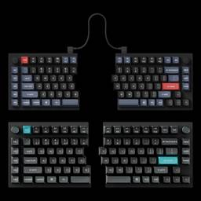
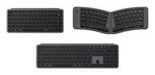
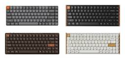
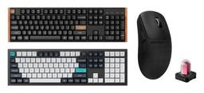
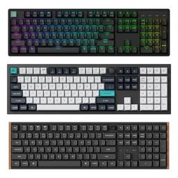
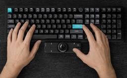
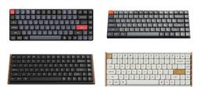

Keychron - News
https://www.keychron.com/blogs/news
Everything about Keychron is here.
フィード

Keychron Q11 vs Q11 Ultra 8K: Which Split Keyboard Is the Best?
Keychron - News
<p>Keychron Q11 vs Q11 Ultra 8K: one links its halves with a cable, the other syncs them wirelessly. See what else differs and which fits your desk.</p><p><a class="read-more" href="https://www.keychron.com/blogs/news/keychron-q11-vs-q11-ultra-8k">More</a></p>
2日前

Keychron B1 Pro for Mac: Who It Suits, vs the B6 Pro and B11 Pro
Keychron - News
<p>Keychron B1 Pro for Mac: a slim 75% keyboard with a Mac layout and up to 1200 hours per charge. See who it suits, and when the B6 Pro or B11 Pro fits.</p><p><a class="read-more" href="https://www.keychron.com/blogs/news/keychron-b1-pro-buying-guide">More</a></p>
2日前

Keychron K3 Max vs K3 HE: Low-Profile for Travel, Office, or Gaming
Keychron - News
<p>Keychron K3 Max vs K3 HE: the 525 g K3 Max for travel, the wood-framed K3 Max SE for an office desk, and the K3 HE with Rapid Trigger for gaming.</p><p><a class="read-more" href="https://www.keychron.com/blogs/news/keychron-k3-max-vs-k3-he">More</a></p>
2日前

Keychron Software: Which App Your Keyboard or Mouse Uses
Keychron - News
<p>Keychron software in one page: Launcher runs in your browser, Assistant and Engine are downloads. See which one your keyboard or mouse uses.</p><p><a class="read-more" href="https://www.keychron.com/blogs/news/keychron-software">More</a></p>
3日前

Keychron Launcher Review: What It Changes and Which Board to Pick
Keychron - News
<p>Keychron Launcher review: what the free web app changes on your keyboard, what you need to run it, and which of three full-size boards to pair it with.</p><p><a class="read-more" href="https://www.keychron.com/blogs/news/keychron-launcher-review">More</a></p>
4日前

Keychron Nape Pro: What the Trackball Changes for Editors and Coders
Keychron - News
<p>The Keychron Nape Pro puts a 25 mm trackball below your spacebar. What it changes for editing and coding, where to place it, and how to set it up.</p><p><a class="read-more" href="https://www.keychron.com/blogs/news/keychron-nape-pro-trackball-for-editors-and-coders">More</a></p>
5日前

Keychron Max vs Pro vs HE vs Ultra: Wireless Tiers Explained
Keychron - News
<p>Keychron Max vs Pro on K3, K4, and K10: Max adds 2.4 GHz, Pro covers Bluetooth and cable. Ultra adds 8000 Hz on 2.4 GHz and cable; HE, magnetic switches.</p><p><a class="read-more" href="https://www.keychron.com/blogs/news/keychron-max-vs-pro">More</a></p>
5日前

Keychron Keyboard & Mouse Video Reviews – October 2026
Keychron - News
This $89 gaming mouse is just INSANE - By randomfrankp“All these features for just $90 is crazy in a market where flagship releases are seeing prices at like 180 to 200.” Cool Tech Under $100 (That’s Worth Every Penny) - By randomfrankp"I've just never seen such a crazy macro pad with it literally being 100 keys for only $65, which I think is really good." Is it time to ditch your mouse? (Keychron Nape Pro Unboxing) - By Cameron Dougherty Tech"I even edited this whole video using nothing but the Nape Pro and my keyboard." Keychron Nape Pro Review: An Incredibly Customizable Trackball - By Cameron Dougherty Tech"The fact that it is web-based with onboard memory for changes, and it features things like eight different layers, press versus hold, multi-button combinations, and more means that you can do so much as a power user." They Actually Made a Concrete Keyboard - By Late Night Unboxing"This is probably the first ever concrete keyboard that you can actually buy off the shelf."
9日前
Keychron Not Connecting to Mac? How to Fix Each Mode
Keychron - News
<p>Keychron keyboard not connecting to your Mac? Find your mode first: Bluetooth, the 2.4 GHz receiver, or the cable. Then fix the macOS side in a few steps.</p><p><a class="read-more" href="https://www.keychron.com/blogs/news/keychron-not-connecting-to-mac">More</a></p>
9日前
Hall Effect Keyboard Explained: Is a Magnetic Keyboard Worth It?
Keychron - News
<p>Learn how magnetic keyboards measure key travel, how they differ from mechanical boards, and who may benefit from adjustable actuation.</p><p><a class="read-more" href="https://www.keychron.com/blogs/news/hall-effect-keyboard">More</a></p>
10日前
Keychron Q6 Ultra 8K Review: Who It Suits and Which Switch to Pick
Keychron - News
<p>Keychron Q6 Ultra 8K review: who the full-size 8000 Hz wireless board suits, what up to 660 hours of battery means, and Brown, Red, or Banana.</p><p><a class="read-more" href="https://www.keychron.com/blogs/news/keychron-q6-ultra-8k-review">More</a></p>
10日前
Rapid Trigger Settings for Valorant and CS2 on a Magnetic Keyboard
Keychron - News
<p>Rapid trigger settings for Valorant and CS2: starting actuation and reset values for WASD, Shift, Ctrl, and abilities, set key by key in Keychron Launcher.</p><p><a class="read-more" href="https://www.keychron.com/blogs/news/rapid-trigger-settings-valorant">More</a></p>
10日前
Keychron Q5 Max vs Q5 Ultra 8K vs Q5 HE: Which 96% Q5 Is the Best?
Keychron - News
<p>Keychron Q5 Max vs Q5 Ultra 8K vs Q5 HE: one 96% aluminum layout, three switch and firmware choices. Which Q5 is the best for your desk and why.</p><p><a class="read-more" href="https://www.keychron.com/blogs/news/keychron-q5-max-vs-q5-ultra-8k-vs-q5-he">More</a></p>
11日前
What Is Actuation Point on a Keyboard? Depth, Force and Rapid Trigger
Keychron - News
<p>The actuation point is how far you press a key before it registers, about 2.0 mm on Gateron Jupiter switches. How it differs from force and Rapid Trigger.</p><p><a class="read-more" href="https://www.keychron.com/blogs/news/what-is-actuation-point">More</a></p>
11日前
Rapid Trigger Mouse: What It Changes in Valorant and CS2
Keychron - News
<p>A rapid trigger mouse resets a click by a release distance you set. What that changes in Valorant and CS2, and how to set it up on the Keychron G6 HE.</p><p><a class="read-more" href="https://www.keychron.com/blogs/news/rapid-trigger-mouse">More</a></p>
12日前
How Do Adjustable Actuation and Rapid Trigger Affect Gaming?
Keychron - News
<div data-page-id="UguydTe80o7hBkxdgW3cjAXunIf" data-lark-html-role="root" data-docx-has-block-data="false"><div class="old-record-id-TrVIdPoQtoIYtpxjxnccsdd5nab">Adjustable actuation changes how a click begins; Rapid Trigger changes when a button can accept the next press. Together they affect feel and control, but can also increase accidental input and adaptation needs.</div></div><p> </p><p><a class="read-more" href="https://www.keychron.com/blogs/news/adjustable-actuation-rapid-trigger-gaming">More</a></p>
12日前
QMK vs VIA vs Launcher: Which Is the Best for Your Keyboard?
Keychron - News
<p>QMK is the firmware inside your keyboard. VIA and Keychron Launcher change its keymap live, with no code and no flashing. See which one is the best.</p><p><a class="read-more" href="https://www.keychron.com/blogs/news/qmk-vs-via-vs-launcher">More</a></p>
12日前
Why Keychron Is Building an HE Mouse Series
Keychron - News
For most of our history, Keychron has been known for keyboards. Over the past few years, a growing share of that work has gone into Hall effect (HE) keyboards, where magnetic switches let players decide exactly how far a key travels before it registers. The Keychron G HE series is what happens when we bring that same idea to the mouse.The G6 HE is the first model in the Keychron HE mouse series. This article explains why we decided to build an HE mouse series, who it is for, what the first model demonstrates, and where the series is heading next.Why we moved from HE keyboards to HE miceOur HE keyboards taught us something simple: once players can tune when an input registers, they rarely want to go back to a fixed switch. Adjustable actuation and Rapid Trigger changed how people used their keyboards, especially in competitive games where small timing differences decide fights. Yet the other hand on the desk was still clicking a switch whose behavior was set at the factory.Bringing that
15日前
Do Magnetic Mouse Switches Need Calibration?
Keychron - News
Short answer: A magnetic mouse switch does not need routine manual calibration. You may need to set an actuation point, and some mice let software re-zero the switch after a repair or a major hardware change. That is configuration, not a daily maintenance task.The confusion comes from borrowing language from magnetic keyboards. Those keyboards often expose rapid trigger, adjustable actuation and calibration controls in one screen. A mouse is simpler: the button moves a magnet past a sensor, and the mouse turns that position into a click threshold.This guide explains how magnetic sensing is calibrated, when drift matters, and what you can do if a click point starts to feel inconsistent.What calibration means for a magnetic mouse A conventional mechanical mouse switch uses metal contacts. A spring flips the contacts closed and the mouse registers the click when the circuit closes. The click point is built into the switch.A magnetic switch replaces the contact with a magnet and a magnetic
15日前
Mouse Double-Clicking? Why Micro Switch Contacts Wear and What Magnetic Switches Change
Keychron - News
<p>Why a mouse starts double clicking: contact bounce and wear inside a mechanical micro switch, what debounce does, and what Hall effect switches change.</p><p><a class="read-more" href="https://www.keychron.com/blogs/news/mouse-double-clicking-why-mechanical-switches-fail">More</a></p>
15日前
Lightweight Gaming Mouse Guide: Weight, Shape, Switches (and Where G6 HE Lands)
Keychron - News
<p>What the gram number on a lightweight gaming mouse measures, what you give up, and which Keychron fits: G6 HE at about 41 or 49 g, G3 at 44 g, G4 at 55 g.</p><p><a class="read-more" href="https://www.keychron.com/blogs/news/lightweight-gaming-mouse-guide">More</a></p>
16日前
Keychron M1 Wireless Mouse Review: Worth It for Work and Games
Keychron - News
<p>Keychron M1 Wireless mouse review: PixArt 3395, 79 g, three connections, a shape for either hand. What each spec changes on your desk and who it suits.</p><p><a class="read-more" href="https://www.keychron.com/blogs/news/keychron-m1-wireless-mouse-review">More</a></p>
16日前
Keychron G6 HE Settings Guide: Actuation, Rapid Trigger and Click Feel
Keychron - News
<p>Keychron G6 HE settings in Keychron Launcher: Optical or Magnetic Mode, the 12-step actuation point, Rapid Trigger, and why the click feel stays put.</p><p><a class="read-more" href="https://www.keychron.com/blogs/news/keychron-g6-he-settings-guide">More</a></p>
16日前
Hall Effect vs TMR: What Actually Matters (and What's Marketing)
Keychron - News
<p>Hall effect vs TMR on a magnetic keyboard: how each sensor reads a key, the real trade-offs, and the specs that change how your board feels.</p><p><a class="read-more" href="https://www.keychron.com/blogs/news/hall-effect-vs-tmr-what-actually-matters">More</a></p>
16日前
Best Keyboard for MacBook: 3 Picks With Mac Keycaps in the Box
Keychron - News
<p>Three Keychron keyboards for MacBook users, picked by desk and typing feel: K2 HE, K3 Max and K10 HE, each with Mac keycaps and a Mac layout in the box.</p><p><a class="read-more" href="https://www.keychron.com/blogs/news/best-keyboard-for-macbook">More</a></p>
16日前
Best Mechanical Keyboard for Programmers: 3 Keychron Picks and Setups
Keychron - News
<p>Three Keychron mechanical keyboards for programmers, picked by desk and typing style, plus the layer and macro setup that keeps shortcuts in reach.</p><p><a class="read-more" href="https://www.keychron.com/blogs/news/best-mechanical-keyboard-for-programmers">More</a></p>
16日前
MagOptic Switch Explained: Optical + Magnetic Sensing, Same Click
Keychron - News
<p>What the MagOptic switch is, how its Optical and Magnetic modes read a click, which mode to pick, and why it is not a haptic mouse.</p><p><a class="read-more" href="https://www.keychron.com/blogs/news/magoptic-switch-explained">More</a></p>
17日前
Keychron Q3 Max Review Guide: Who This TKL Keyboard Is For
Keychron - News
<p>Who the Keychron Q3 Max suits, what its TKL layout, connection, type, color and Gateron Jupiter switches change at your desk, with US list prices.</p><p><a class="read-more" href="https://www.keychron.com/blogs/news/keychron-q3-max-review-guide">More</a></p>
18日前
Keychron Launcher Guide: Remap Keys, Macros, Firmware and AI
Keychron - News
<p>How to use Keychron Launcher in your browser: connect your keyboard, remap keys, record macros, update firmware safely, and ask the built-in AI assistant.</p><p><a class="read-more" href="https://www.keychron.com/blogs/news/keychron-launcher-guide">More</a></p>
18日前
Keychron Q1 HE vs Q1 Max: Pick by How You Type, Not by Spec Sheet
Keychron - News
<p>Keychron Q1 HE vs Q1 Max: same footprint, different switch. Magnetic with an actuation point you set, or Gateron Jupiter mechanical. Pick by how you type.</p><p><a class="read-more" href="https://www.keychron.com/blogs/news/keychron-q1-he-vs-q1-max">More</a></p>
18日前